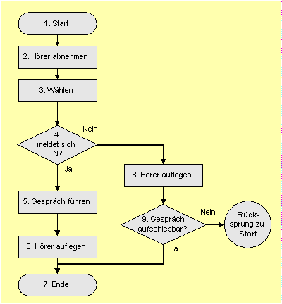
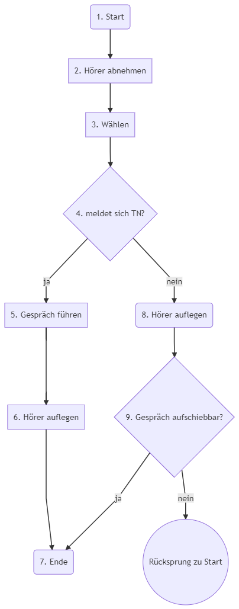

Mermaid
Diagramme im Stil von Markdown
Präsentiert von Michael Steiner
Gliederung
- Projekt
- Einführung anhand der Flussdiagramme
- Andere Diagrammtypen
- Wo ist es nutzbar?
- Fazit
Das Mermaid-Projekt
- Gestartet im November 2014
- Einfache Skript-Sprache für Diagramme
- Vorbild Markdown
- Ausgabeformat SVG
- MIT Lizenz
Ausrichtung
Gruppierung mit Subgraphen
- Definition von Knoten in einem subgraph-Block
- Ausrichtung nicht anpassbar
Knoten IDs
Knoten-Typen
Verbindungen zwischen Knoten
- Nicht verkettbar
- Richtung nicht änderbar
Styling mit Klassen
- Definition von Klassen mit "classDef"
- Zuweisung der Klasse mit "class"
Themes
Mitgelieferte Themes
Flussdiagramm Beispiel

Quelle: http://www.ibim.de/pl+orga/3-3.htm

Sequenzdiagramme
sequenceDiagram
participant Alice
participant Bob
Alice->John: Hello John, how are you?
loop Healthcheck
John->John: Fight against hypochondria
end
Note right of John: Rational thoughts
prevail... John-->Alice: Great! John->Bob: How about you? Bob-->John: Jolly good!
prevail... John-->Alice: Great! John->Bob: How about you? Bob-->John: Jolly good!
Ganttdiagramme
gantt
dateFormat YYYY-MM-DD
section A section
Completed task :done, des1, 2014-01-06,2014-01-08
Active task :active, des2, 2014-01-09, 3d
Future task : des3, after des2, 5d
Future task2 : des4, after des3, 5d
Git-Graph experimental

Wo ist es nutzbar?
- Markdown-Editoren
- Gitlab-Wiki
- Gitbook-Plugin
- Plugins für Visual Studio Code, Atom, Sublime Text
Fazit
- Einfach erstellbar und änderbar
- Einige Diagrammtypen
- Styling möglich
- Layout nicht direkt veränderbar
- Manuell erstellte Diagrammme sind schöner
Links
- Mermaid auf GitHub:
https://github.com/knsv/mermaid - Dokumentation:
https://mermaidjs.github.io - Live-Editor:
https://mermaidjs.github.io/mermaid-live-editor
Vielen Dank für die Aufmerksamkeit
Fragen?